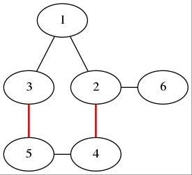

其他博客已经鸽了几篇了，但我依然不会放弃它（考了不下5次，一次都不会QAQ）。
简介
它是干什么的，解决一般图的最大匹配的，但联想到图的最大匹配，匈牙利坐不住了，但注意看题，是一般图（图是褐的）：

此时我们发现，当我们从度数最小的 $1$ 开始走时，遍历途径：$1->2->4->5->3$，但实际我们不难看出正确的增广路：$1->3->5->4->2->6$，显然匈牙利错了。
但这是为什么呢？当我们多构造几组数据（被毒瘤出题人卡个几遍），就可以总结出规律：错误是因为有奇环（下文将其称之为花）。
但信息学的勇敢精神（WC上听到的广告）促使毒瘤出题人勇敢探索，追求卓越，终于发明了这么个算法：带花树。
顾名思义： 将图中的花缩成点，将这棵无奇环的树处理完后，再处理花。
那么这个花有什么性质呢？
花的性质
我们首先在图$G = (V, E)$中找到一个树中找到一个奇环：$v_1->v_2…->v_k->v_1,k \equiv (1 \mod2)$ 大胆假设 $v_1$ 是花中度数最小的点（换成其他点也同理），那么 $v_1$ 的配对点一定不在花中（除去 $v_1$ 点，花中的点的个数为偶数个，一定可以两两匹配，且花与外界相连的只有 $v_1$，证毕），且$(v_2,v_3)…..(v_{k - 1},v_k)$ 一定是匹配边，那么我们可以构建一个图
$$
\begin{aligned}
G’ &= (V’, E’) \\
V’ &= V / \{\ v_2,v_3…..,v_k \}\, \\
E’ &= \{\ (f(a), f(b)) | (a, b) \in E,(a,b \ != v_i,i \in \{\ 1…k \}\ ) \}\
\end{aligned}
$$
其中 $f(i) = v_i$，我们可以得到 $G’$中存在增广路 $⇔$ $G$ 中存在增广路。
证明实在是不会证了，大家看一下巨佬的证明：
$⇒$：对于G中的任意一条增广路，若其不经过这朵花，那么在G′中也存在这条增广路；否则，令这条从s开始的增广路上的最后一个在花上的点为$v_j$那么这条增广路形如 $s⇝v_j⇝t$，我们在G′上构造如下增广路：先从，其中$s⇝v_1⇝t$第一段路程沿着 $bfs/dfs$树走，第二段路程沿着原图中的增广路走，唯一不同的是$v_j$变成了$v_1$（这是合法的，因为所有从$v_j$出发的边都被连到了$v_1$上，而且我们根据所有$v$都是已覆盖点可以知道$v_j$出发的边是非匹配边，花中的点数为奇数）。
$⇐$：对于G′中的一条增广路，若它不经过$v_1$，则G中也存在；否则，设这条增广路为$s⇝v_1→x⇝t$（x可能等于t），根据E′的定义存在$(v_i, x) \in E$，从而我们构造G中的增广路：$s⇝v_1⇝v_i→x⇝t$，其中第一段和第三段不变（因为增广路上$v_1$至多出现1次，所以这两段在G中存在），第二段是在花里走（或者精确一点，若i是奇数，走$v_1→v_2…v_i$，否则走$v_1→v_k…v_i$。证毕。
$bfs$时，我们可以$O(n)$求出$LCA$并$O(kn)$缩花，从而单次$bfs$至多$O(n^2)$，总复杂度至多$O(n^3)$。
实现上，我们不实际缩点，而是对于每个点维护一个$fa$，表示它所处的最大的花的$LCA$（就是$v_1$）。由于花里可能还有花，这个$fa$要用并查集维护。在证明中构造增广路是通过判断$i$奇偶性，但实际上我们可以直接维护每个点要往哪边走，也即维护一个$link_i$表示如果$i$失配要和谁匹配（例如，$link_{v_2}=v_1, link_{v_3}=v_4$）。找$LCA$的时候直接暴力$O(n)$，但要注意只找每个并查集的根节点（因为非根节点都缩到花里了）；缩花时要注意如果两个点已经在一朵花里就不要再缩了。
在此，$orz$巨佬。
代码
1
2
3
4
5
6
7
8
9
10
11
12
13
14
15
16
17
18
19
20
21
22
23
24
25
26
27
28
29
30
31
32
33
34
35
36
37
38
39
40
41
42
43
44
45
46
47
48
49
50
51
52
53
54
55
56
57
58
59
60
61
62
63
64
65
66
67
68
69
70
71
72
73
74
75
76
77
78
79
80
81
82
83
84
85
86
87
88
89
90
91
92
93
94
95
96
97
98
99
100
| #include<bits/stdc++.h>
#define LL long long
using namespace std;
const int N = 1e3 + 5, M = 2.5e5 + 5;
int n, idx;
int h[N], ne[M], e[M];
void add(int x, int y)
{
idx ++;
e[idx] = y, ne[idx] = h[x], h[x] = idx;
}
int vis[N], father[N], chain[N], mate[N];
int q[N], st, ed;
int ss[N], cnt;
int find(int x)
{
return father[x] == x ? x : father[x] = find(father[x]);
}
int lca(int x, int y)
{
cnt ++;
while(ss[x] != cnt)
{
if(x)
{
ss[x] = cnt;
x = find(chain[mate[x]]);
}
swap(x, y);
}
return x;
}
void flower(int x, int y, int p)
{
while(find(x) != p)
{
chain[x] = y;
y = mate[x];
father[y] = father[x] = p;
if(vis[y] == 1) q[ed ++] = y, vis[y] = 2;
x = chain[y];
}
}
bool match(int x)
{
st = ed = 0;
for(int i = 1;i <= n;i ++) father[i] = i, vis[i] = 0;
q[ed ++] = x;
vis[x] = 2;
while(st != ed)
{
x = q[st ++];
for(int i = h[x]; ~i;i = ne[i])
{
int j = e[i];
if(!vis[j])
{
vis[j] = 1;
chain[j] = x;
if(mate[j]) q[ed ++] = mate[j], vis[mate[j]] = 2;
else{
while(j)
{
x = mate[chain[j]];
mate[j] = chain[j];
mate[chain[j]] = j;
j = x;
}
return true;
}
}
else if(vis[j] == 2 && find(j) != find(x))
{
int p = lca(x, j);
flower(x, j, p);
flower(j, x, p);
}
}
}
return false;
}
int m, ans;
int main()
{
scanf("%d%d", &n, &m);
memset(h, -1, sizeof(h));
while(m --)
{
int x, y;
scanf("%d%d", &x, &y);
add(x, y);
add(y, x);
if(!mate[x] && !mate[y]) mate[x] = y, mate[y] = x, ans ++;
}
for(int i = 1;i <= n;i ++)
if(!mate[i] && match(i)) ans ++;
printf("%d\n", ans);
for(int i = 1;i <= n;i ++) printf("%d ", mate[i]);
return 0;
}
|